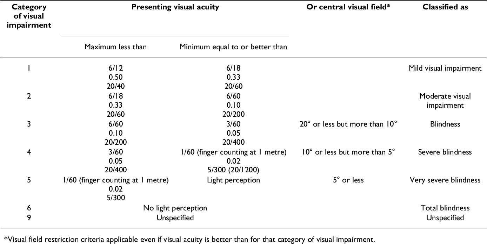

17. Chapitre 17 | Maladies du système nerveux et des organes des sens¶
Aperçu
Les maladies du système nerveux sont classées dans le chapitre 6, maladies du système nerveux (G00-G99), de l’ICD-10-CM.
Les maladies de l’oeil et ses annexes sons classées dans le chapitre 7, maladies de l’oeil et des annexes (H00-H59), de l’ICD-10- CM.
Les maladies de l’oreille et de l’apophyse mastoïde sont classées dans le chapitre 8, maladies de l’oreille et de l’apophyse mastoïde (H60-H95), de l’ICD-10-CM.
Le double codage est souvent nécessaire pour les maladies infectieuses du système nerveux central.
La douleur peut être codée sur base de la documentation indiquant le site de la douleur.
Les codes pour la douleur, non classée ailleurs (G89), peuvent être attribués pour coder le contrôle ou la prise en charge de la douleur.
Si la cause de la douleur est documentée mais non traitée au cours de l’admission, il faut coder la cause en diagnostic secondaire.
Outre l’épilepsie, des crises peuvent être causées par une variété d’affections, et doivent être codées selon l’affection sous-jacente.
Les autres maladies du système nerveux central, traitées dans ce chapitre du manuel, sont l’hémiplégie, la maladie de Parkinson, la dysréflexie autonome et la narcolepsie.
De nombreux problèmes du système nerveux périphérique sont des manifestations d’autres affections.
De tels problèmes sont codés en diagnostic secondaire.
La polyneuropathie des soins intensifs ou critical illness polyneuropathy et la myopathie des soins intensifs ou critical illness myopathie par exemple, sont des complications d’une septicémie.
Une bonne compréhension de la terminologie et de la documentation du dossier patient est essentielle pour un codage correct des maladies de l’oeil.
Les maladies et affections de l’oeil couvertes dans ce manuel comprennent les traumatismes de la cornée (dues à la lumière et aux blessures), la conjonctivite, la cataracte et le glaucome.
La perte auditive peut être codée en tant que conductive, neurosensorielle ou une combinaison des deux.
Objectifs
Les objectifs de ce chapitre sont:
Expliquer la différence entre le système nerveux central et le système nerveux périphérique et situer ces deux zones dans l’ICD-10-CM.
Expliquer comment coder la douleur.
Expliquer les conditions sous lesquelles un code d’épilepsie peut être attribué.
Expliquer le codage d’une variété d’affections du système nerveux.
Expliquer le codage des troubles de l’oeil et de l’oreille.
17.1. Introduction¶
Les maladies du système nerveux sont classées dans le chapitre 6, maladies du système nerveux (G00-G99), de l’ICD-10-CM.
Les maladies de l’oeil et ses annexes sons classées dans le chapitre 7, maladies de l’oeil et des annexes (H00-H59), de l’ICD-10- CM.
Les maladies de l’oreille et de l’apophyse mastoïde sont classées dans le chapitre 8, maladies de l’oreille et de l’apophyse mastoïde (H60-H95), de l’ICD-10-CM.
Le système nerveux est un sytème anatomique complexe et difficile à comprendre. Le fait de le considérer comme un système à deux niveaux peut aider à simplifier le processus de codage:
| Codes | Description |
|---|---|
| G00-G47G80- G99 | Système nerveux central (cerveau et moelle épinière) |
| G50-G73 | Système nerveux périphérique (tous les autres éléments neuronaux dans le reste du corps) |
La dégénérescence cérébrale, la maladie de Parkinson et la méningite sont des affections du système nerveux central.
La polyneuropathie, la myasthénie grave et les dystrophies musculaires sont des affections du système nerveux périphérique.
Le système nerveux périphérique comprend le système nerveux autonome, qui régule l’activité du muscle cardiaque, des muscles lisses et des glandes.
17.2. Maladies inflammatoires du système nerveux central¶
Les maladies inflammatoires du système nerveux central comprennent la méningite et l’encéphalite. L’étiologie de ces affections peut être infectieuse ou non infectieuse.
Les maladies infectieuses du système nerveux central sont codées de plusieurs façons, et il est impératif de suivre attentivement les indications fournies par l’index alphabétique et la liste systématique.
Codage
Un double codage peut être nécessaire, le code de l’affection sous-jacente étant séquencé en premier, suivi d’un code de manifestation.
Par exemple, la méningite due au poliovirus est codé avec A80.9, poliomyélite aiguë, non spécifiée, avec un code de manifestation de G02, méningite dans d’autres maladies infectieuses et parasitaires classées ailleurs.
La méningite bactérienne due à certains organismes tels que le pneumocoque, le streptocoque et le staphylocoque est codée avec des codes de la catégorie G00, avec un quatrième caractère indiquant l’organisme responsable. Les codes G00.2, G00.3 et G00.8 nécessitent également un code additionnel pour préciser l’organisme responsable.
Il convient de déterminer avec soin si l’affection doit être codée avec des codes du chapitre du système nerveux, ou s’il existe des codes combinés dans le chapitre des maladies infectieuses qui incluent l’affection ainsi que l’organisme infectieux.
17.3. Maladie de Parkinson¶
Codage
La maladie de Parkinson est codée avec le code G20 et comprend le parkinsonisme primaire.
Le parkinsonisme secondaire (G21.-):
peut être un effet secondaire de l’utilisation thérapeutique d’un médicament, auquel cas un code de la catégorie G21.- (par exemple, G21.0, G21.11, G21.19) est attribué en premier, suivi du code T43.3X5-, T43.4X5-, T43.505-, T43.595-, ou d’un code de T36-T50 avec le cinquième ou sixième caractère égal à 5 comme code additionnel pour identifier le médicament responsable.
peut également être postencéphalitique (G21.3), vasculaire (G21.4), autre (G21.8) ou non spécifié (G21.9).
La maladie de Parkinson est parfois causée par la syphilis; dans ce cas, elle est codée avec le code A52.19, autre neurosyphilis symptomatique.
Pour la maladie de Parkinson avec démence, il faut attribuer le code G20, maladie de Parkinson, suivi du code F02.80, démence dans d’autres maladies classées ailleurs sans trouble du comportement.
17.4. Maladie de Alzheimer¶
La maladie d’Alzheimer est codée avec de codes de la catégorie G30.
Codage
Attention
La démence fait partie intégrante de la maladie d’Alzheimer. Le médecin n’a donc pas besoin de documenter séparément cette affection pour un patient atteint de la maladie d’Alzheimer.
Un code de la sous-catégorie F02.8-, démence dans des affections classées ailleurs, est attribué comme diagnostic secondaire selon les instructions de l’index alphabétique pour préciser la présence ou l’absence de troubles du comportement.
17.5. Épilepsie¶
Attention
Il ne faut pas déduire que toute documentation diagnostique décrivant des convulsions ou des crises peut être codée comme de l’épilepsie ; ces états se produisent également dans un certain nombre d’autres maladies, telles que les tumeurs cérébrales, les accidents vasculaires cérébraux, l’alcoolisme, les déséquilibres électrolytiques et les états fébriles. Les crises de grand mal, par exemple, peuvent être dues à des causes autres que l’épilepsie. Un code pour l’épilepsie ne doit pas être attribué à moins que le médecin documente adéquatement cette affection dans le dossier patient.
Lorsque le diagnostic est documenté uniquement en termes de convulsion ou de crise sans autre identification de la cause, le code R56.9, convulsions non spécifiées, doit être attribué.
Lorsque le médecin documente des antécédents de convulsions dans le bilan mais n’inclut aucune mention de convulsions, aucun code ne doit être attribué, à moins qu’une documentation claire indique que les critères pour le codage de l’affection ont été remplis.
Notez que…
L’index ICD-10-CM réfère le terme Epilepsy au code G40.909, alors que le terme Seizure(s) est référé au code R56.9.
Codage
Pour la catégorie G40, épilepsie et crises récurrentes, l’ICD-10-CM prévoit :
un cinqième caractère qui permet d’identifier l’épilepsie comme réfractaire lorsqu’elle est documentée ainsi par le médecin.
Des termes tels que pharmacorésistant (pharmacologiquement résistant), mal contrôlé et résistant au traitement sont considérés comme équivalents à réfractaire.
Il ne faut pas présumer que l’affection est réfractaire à partir de déclarations générales dans la documentation du dossier du patient.
un sixième caractère est utilisé pour identifier si l’état épileptique est présent.
17.6. Céphalée et migraine¶
Un diagnostic de céphalée non autrement spécifiée est classé au chapitre 18, symptômes, signes et résultats anormaux d’examens cliniques et de laboratoire, non classés ailleurs (R00-R99), de l’ICD-10-CM et codé avec le code R51.9, céphalée, non spécifiée.
Le statut migraineux fait généralement référence à une crise de migraine sévère qui dure plus de 72 heures. Toutefois, le terme état migraineux doit être documentée par le médecin.
Codage
Les migraines sont classées dans la catégorie G43, migraine
G43.0- Migraine sans aura
G43.1- Migraine avec aura
G43.4- Migraine hémiplégique
G43.5- Migraine persistante avec aura sans infarctus cérébral
G43.6- Migraine persistante avec aura et infarctus cérébral
G43.7- Migraine chronique sans aura.
G43.A- Vomissements cycliques
G43.B- Migraine ophtalmoplégique
G43.C- Syndromes de céphalées périodiques chez l’enfant ou l’adulte
G43.D- Migraine abdominale
G43.8- Autre migraine
G43.9- Migraine, non spécifiée
Les céphalées spécifiques sont classées dans la catégorie G44, autres syndromes de céphalées.
G44.0- Syndrômes d’algie vasculaire de la face et autres céphalées autonomes du trijumeau
G44.1 Céphalées vasculaires, non classées ailleurs
G44.2- Céphalées de type tension
G44.3- Céphalées post-traumatiques
G44.4- Céphalées d’origine médicamenteuse, non classées ailleurs
G44.5- Syndromes compliqués de céphalées
G44.8- Autres syndromes spécifiques de céphalées
Les céphalées consécutives à une ponction lombaire sont codées avec le code G97.1, autre réaction à une ponction lombaire ou spinale.
17.7. Narcolepsie¶
Codage
L’ICD-10-CM fait distinction entre les sous-catégories suivantes de narcolepsie :
17.8. Hémiplégie et hémiparésie¶
L’hémiplégie est classée dans la catégorie G81, hémiplégie et hémiparésie, avec un cinquième caractère pour indiquer le côté affecté et si le côté affecté est dominant ou non dominant.
Lorsque l’on ne dispose pas de documentation sur le caractère dominant ou non dominant du côté affecté, et lorsque la classification ne fournit pas de valeur par défaut, le codage se fait comme suit:
Pour les patients ambidextres, la valeur par défaut doit être dominante.
Si le côté gauche est affecté, la valeur par défaut est non dominante.
Si le côté droit est affecté, la valeur par défaut est dominante.
Cette directive s’applique :
aux codes de la catégorie G81, hémiplégie et hémiparésie
aux codes de la sous-catégorie G83.1, monoplégie du membre inférieur
aux codes de la sous-catégorie G83.2, monoplégie du membre supérieur
aux codes de la sous-catégorie G83.3, monoplégie non spécifiée.
Attention
L’hémiplégie ne fait pas partie intégrante d’un AVC aigu. Par conséquent, un code de la catégorie G81, hémiplégie et hémiparésie, est attribué comme code additionnel lorsqu’elle survient. Même si l’hémiplégie associée à l’AVC se résout sans traitement, elle a un impact sur les soins du patient. Tout déficit neurologique causé par un AVC doit être documenté et codé, même s’il s’est résorbé au moment de la sortie de l’hôpital.
Notez que…
Perte de force unilatérale:
Une perte de force unilatérale clairement documentée comme étant associée à un AVC est synonyme d’hémiparésie et d’hémiplégie.
Une perte de force d’un seul membre associée à un AVC est synonyme de monoplégie.
Une perte de force en dehors de cette association claire ne peut pas être considérée comme une hémiparésie/hémiplégie ou une monoplégie, à moins qu’elle ne soit associée à un autre trouble ou une autre lésion du cerveau.
Lorsque le patient est admis ultérieurement avec une hémiplégie/hémiparésie ou une perte de force d’un membre (supérieur ou inférieur) due à une maladie cérébrovasculaire, un code de la catégorie I69, séquelles de maladie cérébro-vasculaire est attribué pour indiquer que l’affection est une séquelle d’un AVC.
Exemples
I66.9 + G81.91 Thrombose cérébrale avec hémiplégie droite transitoire qui a disparu à la sortie de l’hôpital
I66.9 + G81.91 Thrombose cérébrale avec hémiplégie du côté dominant droit
I69.352 Hémiplégie du côté dominant gauche due à un AVC antérieur
G81.90 + S34.109S Hémiparésie due à une ancienne lésion de la moelle épinière lombaire.
17.9. Douleur¶
La douleur est codée en fonction du site de la douleur. Les codes de site de la douleur se trouvent :
dans le chapitre 18, symptômes, signes et résultats anormaux d’examens cliniques et de laboratoire, non classés ailleurs (R00-R99), de l’ICD-10- CM.
Par exemple, R51.9, céphalée.
dans le chapitre du système corporel approprié de l’ICD-10-CM.
Par exemple, M79.609, la douleur dans un membre non spécifié.
La détermination du caractère étant aigu, chronique ou un syndrome de douleur chronique dépend de la documentation du médecin. Il n’y a pas de délai définissant le moment où la douleur devient chronique.
Sauf indication contraire ci-dessous, les codes de la catégorie G89, douleur, non classée ailleurs, peuvent être combinés avec les codes du site de la douleur si le code de la catégorie G89 fournit plus de détails sur la douleur aiguë ou chronique et la douleur liée à un néoplasme.
Si la douleur n’est pas spécifiée comme étant aiguë ou chronique, postthoracotomie, postprocédurale ou liée à un néoplasme, codes de la catégorie G89 ne peuvent pas être attribués.
Un code de la catégorie G89 ne peut pas être attribué si le diagnostic sous-jacent (définitif) est connu, sauf si le motif de la consultation est le contrôle/la gestion de la douleur et non la gestion de l’affection sous-jacente.
Lorsque la raison d’admission est une procédure visant à traiter l’affection sous-jacente, telle qu’une fusion spinale pour le traitement de la douleur associée à une fracture vertébrale, un code pour l’affection sous-jacente (par exemple, fracture vertébrale) doit être attribué comme diagnostic principal. Un code de la catégorie G89 ne peut pas être attribué.
17.9.1. Admission visant à côntroler ou gérer la douleur¶
Les codes de la catégorie G89 peuvent être codés en diagnostic principal lorsque l’admission est destinée au contrôle ou à la gestion de la douleur. Ces admissions ne sont généralement pas destinées à un bilan diagnostique ou à un traitement de l’affection sous-jacente, mais à la gestion de la douleur. Dans ces situations, si la cause sous-jacente de la douleur est connue, il faut la coder comme un diagnostic secondaire.
Exemple
Un patient souffrant d’un disque intervertébral déplacé, d’un empiètement nerveux et d’une douleur dorsale intense est admis pour une injection de stéroïdes dans le canal rachidien. L’injection est destinée à soulager la douleur, mais elle ne traite pas le disque déplacé.
Si l’admission est destinée au contrôle de la douleur liée, associée ou due à un néoplasme malin, le code G89.3, douleur liée à un néoplasme (aiguë) (chronique), doit être attribué. Le néoplasme sous-jacent est codé en diagnostic secondaire. Comme le code du néoplasme fournit des informations sur le site spécifique, il ne faut pas attribuer un code additionnel pour le site de la douleur. Lorsque la raison de l’admission est la gestion du néoplasme et que la douleur associée au néoplasme est également documentée, le code G89.3 est codé en diagnostic secondaire. Un code additionnel pour le site de la douleur ne peut pas être attribué.
Si l’admission est destinée à une procédure pour traiter une affection sous-jacente, l’affection sous-jacente doit être codé en diagnostic principal.
Exemple
Si un patient est admis pour une fusion spinale pour traiter une sténose spinale lombaire avec claudication neurogène, il faut attribuer le code M48.062, sténose spinale, région lombaire, avec claudication neurogène, comme diagnostic principal. Un code de la catégorie G89 ne peut pas être attribué.
Les patients souffrant de douleurs chroniques dont les traitements conservateurs ont échoué peuvent subir l’insertion de neurostimulateurs pour contrôler la douleur. Dans ce cas, le code de douleur approprié est codé en diagnostic principal. Lorsqu’une admission est destinée à une procédure visant à traiter une affection sous-jacente et qu’un neurostimulateur est inséré pour le contrôle de la douleur au cours de la même admission, un code pour l’affection sous-jacente doit être codé en diagnostic principal avec le code de la douleur en diagnostic secondaire.
Lorsque l’admission est destinée à toute autre raison que le contrôle ou la gestion de la douleur et qu’un diagnostic associé et définitif pour la douleur n’a pas été établi(confirmé) par le médecin, le code pour le site spécifique de la douleur doit être attribué en premier, suivi du code approprié de la catégorie G89. Si le diagnostic définitif a été établi, il faut coder le diagnostic définitif.
17.9.2. Douleur post-opératoire¶
Attention
La douleur postopératoire de routine ou attendue immédiatement après la chirurgie ne peut pas être codée.
Les douleurs post-thoracotomie et autres douleurs postopératoires sont classées dans les sous-catégories G89.1 et G89.2, selon que la douleur est aiguë ou chronique. La valeur par défaut pour les douleurs postthoracotomie et autres douleurs postopératoires non spécifiées comme aiguës ou chroniques est le code de la forme aiguë.
La douleur postopératoire associée à une complication postopératoire spécifique (comme des fils de suture douloureux) ou associée à des dispositifs, implants ou greffons laissés dans un site chirurgical (comme une prothèse de hanche douloureuse) est attribuée au(x) code(s) approprié(s) figurant au chapitre 19, lésions, empoisonnements et certaines autres conséquences de causes externes (S00-T88), de l’ICD-10-CM. Un code de la catégorie G89 est attribué comme code additionnel pour identifier la douleur aiguë ou chronique (G89.18 ou G89.28).
La douleur postopératoire peut être codé en diagnostic principal lorsque la raison de l’admission est le contrôle/la gestion de la douleur postopératoire.
17.10. Dysréflexie autonome¶
Le code G90.4, dysréflexie autonome, est attribué pour coder cette affection.
Chaque manifestation ou symptôme n’est pas codé séparémént.
Bien que dans la plupart des scénarios de double codage, l’affection sous-jacente soit codée en diagnostic principal, dans ce cas, la dysréflexie est codée comme diagnostic principal, suivie d’un code pour l’affection chronique sous-jacente qui a déclenché cet état mettant la vie en danger (par exemple, escarres, fécalome, infection urinaire).
17.11. Hydrocéphalie¶
Le code G91.0, hydrocéphalie communicante, est codé en cas d’une hydrocéphalie à pression normale (HPN) secondaire.
Le code G91.1, hydrocéphalie obstructive, est codé pour cette affection acquise.
L’hydrocéphalie à pression normale idiopathique (HPNI) peut survenir sans cause identifiable. Le code G91.2, hydrocéphalie à pression normale (idiopathique) est codé pour ce type d’hydrocéphalie acquise.
Si la documentation du dossier patient ne précise pas si l’hydrocéphalie est congénitale ou acquise, le code G91.9, hydrocéphalie non spécifiée, doit être attribué.
17.12. Encéphalopathie¶
Codage
Codage des des encéphalopathies les plus courantes:
L’encéphalopathie anoxique désigne les lésions cérébrales dues à un manque d’oxygène. Ce type d’encéphalopathie est codé avec le code G93.1, lésions cérébrales anoxiques, non classées ailleurs.
L’encéphalopathie alcoolique est codée avec le code G31.2, dégénérescence du système nerveux due à l’alcool.
L’encéphalopathie hépatique est une atteinte cérébrale due à une maladie du foie, et elle est codé avec le code K72.90, Insuffisance hépatique, non spécifiée, sans coma, lorsque l’étiologie n’est pas spécifiée ou est inconnue. À l’entrée de l’index Failure, hepatic, il existe des sous-entrées pour les codes décrivant spécifiquement les différentes étiologies et pour l’insuffisance hépatique avec ou sans coma. L’encéphalopathie hépatique n’est pas synonyme de coma hépatique. La valeur par défaut pour l’insuffisance hépatique est sans coma (K72.90).
L’encéphalopathie métabolique est avec le code G93.41, encéphalopathie métabolique, est attribué à cette affection. Le code G93.41 comprend également l’encéphalopathie septique.
L’encéphalopathie toxique est également connue sous le nom d’encéphalopathie métabolique toxique. L’ICD-10-CM classe cette affection sous le code G92, encéphalopathie toxique. Le codage approprié de l’encéphalopathie toxique due à des médicaments est basé sur le fait que la toxicité du médicament est qualifiée d’effet secondaire ou d’empoisonnement.
Lors du codage d’une réaction secondaire d’un médicament qui a été correctement prescrit et administré, il faut attribuer le code approprié pour la nature de l’effet secondaire suivi du code approprié pour l’effet secondaire du médicament (T36-T50). Le code du médicament aura un cinquième ou sixième caractère égal à 5 (par exemple, T36.0x5-) pour indiquer l’effet secondaire.
Si l’encéphalopathie toxique est due à une intoxication par un agent toxique, un code des catégories T51-T65 est attribué en premier pour identifier l’agent toxique responsable.
L’encéphalopathie de Wernicke est codé avec le code E51.2, encéphalopathie de Wernicke.
L’encéphalopathie associée à l’accident vasculaire cérébral ou stroke ne fait pas partie intégrante de ces affections. Le code G93.49, autre encéphalopathie, est attribué en plus des codes pour l’accident vasculaire cérébral et le stroke.
Le code G93.49, autre encéphalopathie, est attribué lorsque l’encéphalopathie est liée à une affection (par exemple, encéphalopathie due à une infection des voies urinaires) mais qu’une encéphalopathie spécifique (par exemple, métabolique, toxique ou hypertensive) n’est pas documentée.
L’encéphalopathie non spécifiée est attribuée au code G93.40, encéphalopathie non spécifiée.
Le code [G94, autres troubles du cerveau dans les maladies classées ailleurs], ne doit être attribué que pour les affections dont les entrées de l’index alphabétique renvoient directement au code G94 pour certaines étiologies.
17.13. Troubles du système nerveux périphérique¶
Les troubles du système nerveux périphérique sont classés dans les catégories G50 à G73 en fonction de l’affection et des nerfs concernés.
De nombreux codes de cette section sont des manifestations d’autres maladies et sont codés en tant que diagnostic secondaire, l’affection sous-jacente figurant comme diagnostic principal.
17.14. Critical illness polyneuropathy¶
Les synonymes de Critical illness polyneuropathy sont Critical illness neuropathy, la neuropathie des soins intensifs et la polyneuropathie des soins intensifs.
Critical illness polyneuropathy est codé avec le code G62.81, polyneuropathie des soins intensifs.
17.15. Critical illness myopathy¶
Critical illness myopathie est associée au sepsis, à l’utilisation d’agents bloquants neuromusculaires et de corticostéroïdes (chez les asthmatiques et les patients ayant subi une transplantation d’organe), et à la neuropathie. Elle peut entraîner des difficultés de sevrage de patients de la ventilation mécanique et une récupération prolongée après une maladie.
Critical illness myopathie est codé avec le code G72.81, myopathie des soins intensifs.
17.16. Fuite de liquide céphalo-rachidien¶
Codage
Une fuite spontanée de liquide céphalorachidien survenant sans raison connue est codé avec le code G96.01 (crânien) ou G96.02 (spinal).
Une autre fuite de liquide céphalorachidien est codé avec le code G96.08](http://icd10be.health.belgium.be/default.php#!tabular/2021/G96.08/1) (crânien) ou G96.09 (spinal).
Une fuite de liquide céphalo-rachidien non spécifiée est codé avec le code G96.00.
17.17. Hypotension intracrânienne¶
Codage
L’hypotension intracrânienne spontanée est codé avec le code G96.811.
Autre hypotension intracrânienne est codé avec le code G96.819.
L’hypotension intracrânienne non spécifiée est codé avec le code G96.810.
L’hypotension intracrânienne causée par une procédure est incluse dans la sous-catégorie G97.8, autres complications et troubles peropératoires et postprocéduraux du système nerveux.
Lorsque l’hypotension intracrânienne est due à un dispositif de dérivation, il faut attribuer le code G97.83, hypotension intracrânienne suite à une dérivation lombaire du liquide céphalo-rachidien.
Lorsque l’hypotension intracrânienne est due à une autre procédure, il faut attribuer le code G97.84, hypotension intracrânienne suite à une autre procédure.
17.18. Maladies de l’oeil et de ses annexes¶
Attention
La classification des maladies de l’oeil est très détaillée, et la compréhension de la terminologie utilisée est particulièrement importante pour le codage. Des termes qui semblent similaires peuvent avoir des significations totalement différentes. Une bonne compréhension de la documentation du diagnostic dans le dossier patient est nécessaire avant d’attribuer un code.
La déficience visuelle (H54) est classée en fonction de la sévérité, l’état de l’oeil moins bon étant indiqué en premier et celui du meilleur oeil en second dans l’intitulé du code. Si la cause sous-jacente associée de la cécité ou de la perte visuelle est connue, elle doit être codée en premier.
L’ICD-10- CM comprend un tableau (voir ci-dessous) avec la classification de la sévérité de la déficience visuelle recommandée par un groupe d’étude de l’Organisation Mondiale de la Santé.
Le terme basse vision dans la catégorie H54 comprend les catégories 1 et 2 du tableau ; le terme cécité, les catégories 3, 4 et 5; et le terme perte de vision non spécifiée, la catégorie 9.
Exemples
Les informations du tableau sont destinées à fournir des indices permettant d’identifier les lacunes éventuelles de la documentation, pour lesquelles il peut être nécessaire de consulter le médecin. Elles ne sont pas destinées à remplacer la documentation spécifique du médecin pour justifier l’attribution du code.
Documentation et codage
Le code H54.3, perte de vision non qualifiée, deux yeux, est attribué lorsque la cécité ou la basse vision des deux yeux est documentée mais que la catégorie de déficience visuelle n’est pas documentée.
Un code de la sous-catégorie H54.6, perte de vision non qualifiée, un oeil, est attribué si la cécité ou la basse vision d’un oeil est documentée mais que la catégorie de déficience visuelle n’est pas documentée.
Le code H54.7, perte de vision non spécifiée, est attribué lorsque la cécité ou la perte visuelle est documentée mais que l’information si un ou les deux yeux sont affectés n’est pas documenté.
Occasionnellement, les troubles de la vision peuvent provoquer une inclinaison de la tête, entraînant un torticolis oculaire ou un torticolis induit par des troubles oculaires. Le torticolis oculaire est codé en attribuant d’abord le code approprié pour l’affection oculaire causant le torticolis, par exemple, nystagmus (H55.-), le strabisme (H50.9), ou paralysie du quatrième nerf (H49.1-), suivi du code R29.891, torticolis oculaire.
17.18.1. Traumatismes de la cornée¶
Des codes de la sous-catégorie H16.13-, photokératite, sont attribués pour une brûlure de la cornée, due à la lumière trop forte, généralement appelée kératite par ultraviolets.
Il s’agit toujours d’une lésion, et le code de cause externe de morbidité approprié doit être attribué en tant que code additionnel, comme les codes de la catégorie W89, exposition à une source lumineuse artificielle visible et aux ultraviolets, ou le code X32.-, exposition à la lumière du soleil.
Codage
Les lacérations de la cornée et/ou de la sclérotique sont classées dans la catégorie S05, lésions de l’oeil et de l’orbite.
Un quatrième caractère est attribué pour indiquer :
une contusion du globe oculaire et des tissus orbitaires
un prolapsus ou une perte de tissu intraoculaire
une blessure pénétrante
la présence ou non d’un corps étranger
une avulsion de l’oeil
des affections associées
Un cinquième caractère est attribué pour indiquer s’il s’agit d’un oeil non spécifié, de l’oeil droit ou de l’oeil gauche.
Un code de cause externe de morbidité est attribué pour indiquer la cause externe.
17.18.2. Conjonctivite¶
La conjonctivite est classée dans la catégorie H10, conjonctivite, de l’ICD- 10-CM.
La conjonctivite giganto-papillaire chronique est classée dans la sous-catégorie H10.41-.
La conjonctivite vernale (H10.44) est due à une réaction allergique au pollen.
Lorsque la cause de la conjonctivite aiguë est un agent chimique ou toxique, le code H10.21- est utilisé, avec un code des catégories T51-T65 attribué en premier pour identifier l’agent chimique et l’intention (par exemple, accidentel, agression).
La conjonctivite due à la chlamydia est classée en A74.0 ou en A71.1 lorsqu’elle est désignée comme due au trachome.
Le conjonctivochalasis est codé en utilisant le code H11.82-.
Le code H04.12-, syndrome de l’oeil sec, est fourni par l’index pour le syndrome de l’oeil sec, un trouble de la glande lacrymale.
Cependant, le code H04.12- est pas approprié pour l’oeil sec associé à la paralysie de Bell, qui n’implique pas la glande lacrymale mais est dû à l’exposition à l’air résultant de l’incapacité de fermer l’oeil suite à la sévère paralysie faciale aiguë accompagnant la paralysie de Bell. Le code H16.21-, kératoconjonctivite d’exposition, est attribué pour l’oeil sec lié à la paralysie de Bell.
17.18.3. Dystrophie cornéenne¶
Les dystrophies cornéennes sont des troubles oculaires génétiques causés par l’accumulation de matériel anormal sur la cornée. Ces troubles sont classés en fonction de la présentation clinique de la lésion (ressemblant au motif superposé d’un treillis) et de la couche de la cornée affectée par la lésion. Un septième caractère indiquant la latéralité est disponible pour plusieurs sous-catégories de la dystrophie cornéenne.
Codage
H18.50- Dystrophies cornéennes héréditaires non spécifiées
H18.51- Dystrophie cornéenne endothéliale
H18.52- Dystrophie cornéenne épithéliale (juvénile)
H18.53- Dystrophie cornéenne granulaire
H18.54- Dystrophie cornéenne à treillis
H18.55- Dystrophie cornéenne maculaire
H18.59- Autres dystrophies cornéennes héréditaires
17.18.4. Cataracte¶
Attention
Lors du codage des cataractes, il faut éviter de faire des hypothèses sur le type de cataracte en fonction de l’âge du patient ou d’autres affections. Une cataracte chez un patient âgé n’est pas nécessairement sénile ou mature; la terminologie utilisée dans la documentation du dossier patient est décisive.
L’ICD-10-CM présume une relation de cause à effet entre le diabète et la cataracte, en raison du lien établi dans l’index alphabétique par les sous-termes with et in. Par conséquent, le diabète et la cataracte doivent être codés comme étant associés même en l’absence de documentation du médecin établissant explicitement le lien.
Exemple
Lorsqu’un patient diabétique est documenté comme ayant une cataracte liée à l’âge ou une cataracte sénile, la cataracte doit être codée comme une cataracte diabétique.
17.18.5. Glaucome¶
Le glaucome est codé avec des codes de la catégorie H40, glaucome.
Codage
Il faut attribuer autant de codes de la catégorie H40 que nécessaire pour identifier le type de glaucome, l’oeil affecté et le stade. — le quatrième et/ou le cinquième caractère est utilisé pour coder le glaucome par type. — le cinquième ou le sixième caractère peut être utilisé dans la plupart des cas pour coder l’oeil affecté. — le septième caractère est nécessaire pour les codes des sous-catégories H40.1-, H40.20-, H40.22-, H40.3-, H40.4-, H40.5-, et H40.6- pour coder le stade (non spécifié, léger, modéré, sévère, ou indéterminé).
Il est possible qu’un patient ait un glaucome bilatéral, avec un type identique ou différent pour chaque oeil, et un stade identique ou différent pour chaque oeil. Des directives spécifiques ont été créées pour traiter le codage de ces situations. Ces directives varient largement selon que la classification distingue ou non la latéralité ; les sous-catégories H40.10- et H40.20- ne distinguent pas la latéralité ; les autres sous-catégories le font.
Le tableau ci-dessous résume ces directives.
| Glaucome bilatéral | La classification distingue la latéralité | La classification ne distingue pas la latéralité |
|---|---|---|
| Même type -Même stade | Codage d’un code bilatéral pour le type de glaucome, avec le septième caractère approprié pour le stade. Exemple : H40.2231, glaucome bilatéral chronique à angle fermé, stade léger | Codage d’un code pour le type de glaucome, avec le septième caractère approprié pour le stade. Exemple : H40.10X1, glaucome bilatéral à angle ouvert, stade léger |
| Même type -Stade différent | Codage de codes distincts pour le type de glaucome pour chaque oeil, avec le septième caractère approprié pour le stade spécifique au lieu d’un code de glaucome bilatéral pour les deux yeux. Exemple : H40.2211 + H40.2222, glaucome bilatéral chronique à angle fermé, stade léger à l’oeil droit, modéré à l’oeil gauche | Codage de codes distincts pour le type de glaucome pour chaque oeil, avec le septième caractère approprié pour le stade spécifique. Exemple : H40.10X1 + H40.10X2, glaucome bilatéral angle ouvert, stade léger à l’oeil droit, modéré à l’oeil gauche |
| Type différent -Même stade | Codage de code approprié pour chaque oeil au lieu d’un code de glaucome bilatéral pour les deux yeux. Exemple : H40.2221 + H40.1211, glaucome chronique à angle fermé , stade léger à l’oeil gauche, glaucome à angle ouvert, pression basse, stade léger à l’oeil droit | Codage de codes distincts pour le type de glaucome pour chaque oeil, avec le septième caractère approprié pour le stade spécifique. Exemple : H40.10X1 + H40.20X1, glaucome à angle ouvert, stade léger à l’oeil droit, glaucome primaire à angle fermé, stade léger à l’oeil gauche |
Lorsqu’un patient est admis pour un glaucome et que le stade du glaucome évolue au cours de l’admission, seul le code du stade le plus élevé documenté est codé.
Attention
Un glaucome dont le stade est non spécifié ou non documenté (septième caractère 0) n’est pas identique à un glaucome avec un stade de glaucome documenté comme indéterminé (septième caractère 4). L’attribution du stade indéterminé doit être basée sur la documentation clinique et est réservée aux glaucomes dont le stade ne peut être déterminé cliniquement.
Codage
La catégorie H42, glaucome dans les maladies classées ailleurs, exige que l’affection sous-jacente soit codée en premier, comme l’amyloïdose (E85.-), l’aniridie (Q13.1), ou un trouble métabolique spécifié (E70-E88).
Le glaucome dans le diabète sucré est codé selon le type de diabète (E08-E13) avec -.39.
Le glaucome dans la syphilis est codé avec le code A52.71, oculopathie syphilitique tardive.
Le glaucome tuberculeux est codé avec le code A18.59, autre tuberculose de l’oeil.
La mauvaise circulation de l’humeur aqueuse était auparavant connue sous le nom de glaucome malin. Aucune véritable néoplasme malin n’est associée à ce type de glaucome. Le code H40.83-, mauvaise circulation de l’humeur aqueuse, est utilisé pour coder cette affection.
17.19. Maladies de l’oreille et de l’apophyse mastoïde¶
Le chapitre 8 de l’ICD-10-CM, intitulé maladies de l’oreille et de l’apophyse mastoïde (H60-H95), comprend :
les maladies de l’oreille externe (H60-H62)
les maladies de l’oreille moyenne et de la mastoïde (H65-H75)
les maladies de l’oreille interne (H80- H83)
autres troubles de l’oreille (H90-H94)
les complications peropératoires et postprocédurales et les troubles de l’oreille et de l’apophyse mastoïde, non classés ailleurs (H95).
17.19.1. Otite¶
L’ICD-10-CM classe l’otite selon qu’elle:
affecte l’oreille externe ou l’oreille moyenne
survient soudainement et pendant une courte période (aiguë) ou de façon répétée sur une longue période (chronique)
Codage
L’otite est classé dans les catégories suivantes de l’ICD-10-CM :
H60 Otite externe
Pour les codes de la catégorie H60, otite externe, des caractères supplémentaires fournissent une spécificité supplémentaire concernant l’affection, telle qu’infectieuse et non infectieuse (chimique, actinique, réactive ou eczématoïde).
H61 Autres troubles de l’oreille externe
H62 Maladies de l’oreille externe dans les maladies classées ailleurs
H65 Otite moyenne non suppurée
La catégorie H65, otite moyenne non suppurative, est est encore subdivisée pour préciser la nature aiguë, subaiguë ou chronique, ou la forme séreuse, allergique ou mucoïde de l’otite moyenne.
H66 Otite moyenne suppurative et non spécifiée
La catégorie H66, otite moyenne suppurative et non spécifiée, est encore subdivisée pour identifier si l’affection est aiguë ou chronique et s’il y a rupture spontanée du tympan.
H67 Otite moyenne dans les maladies classées ailleurs
17.19.2. Surdité et perte auditive¶
La perte auditive peut être unilatérale ou bilatérale.
Codering
La plupart des pertes auditives sont classées de l’une des trois façons suivantes : — La perte auditive conductive (H90.0-H90.2, H90.A11, et H90.A12), la perte auditive étant due à un défaut de l’appareil conducteur de l’oreille (également appelée surdité de conduction). — La perte auditive neurosensorielle (H90.3-H90.5, H90.A21, et H90.A22), la perte auditive étant due à un défaut du mécanisme sensoriel de l’oreille ou des nerfs. — La perte auditive mixte (conductive et neurosensorielle) (H90.6-H90.8, H90.A31, et H90.A32).
Codering
D’autres classifications de la perte auditive sont liées à la cause sous-jacente, comme les suivantes :
La perte auditive ototoxique (H91.0-) causée par l’ingestion de substances toxiques. Lorsque ce type de perte auditive résulte d’un empoisonnement, il faut attribuer en premier lieu un code de T36-T65 avec le cinquième ou sixième caractère 1-4 ou 6. Un code de T36-T65 avec le cinquième ou sixième caractère 5 est attribué comme code additionnel lorsque la perte auditive est un effet secondaire.
Presbyacousie (H91.1-), ou perte auditive liée à l’âge avec incapacité progressive d’entendre. Elle est considérée comme une perte auditive neurosensorielle.
La perte auditive idiopathique soudaine (H91.2-), ou perte auditive soudaine et inexpliquée.